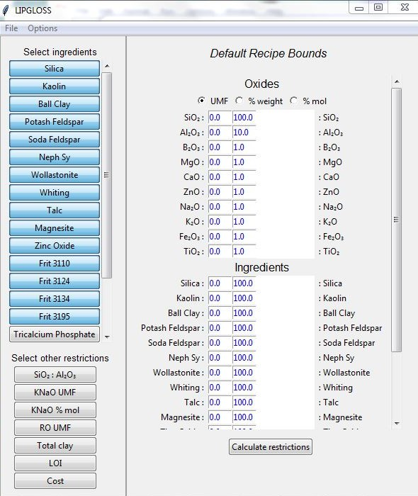
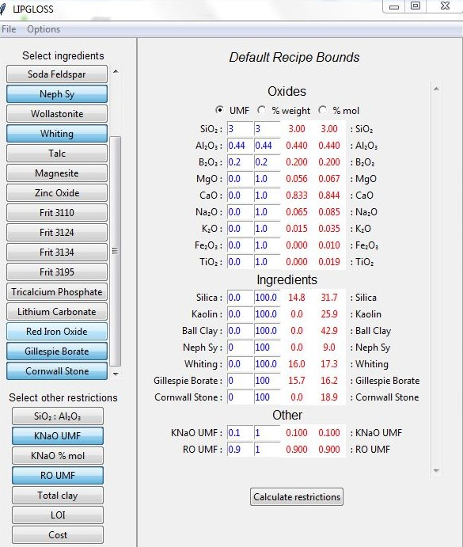

Currently, to use LIPGLOSS, you need to install Python 3, the linear programming API PuLP, and the GLPK library (and possibly the tkinter Python package). See the README.md file on Github for more details.
UPDATE: There is now a version 2, with slightly different installation requirements, described in this readme file. This is hopefully easier to install.
To open the graphical user interface, run the main.py script. You’ll be presented with a window that shows a list of ingredients and ‘other restrictions’ in the panel on the left. Some of these will have already been selected by default, but you can add or remove items by clicking on the buttons.

In the panel on the right, the selected ingredients and other restrictions will be shown, as well as any oxides that appear in the selected ingredients. The two columns on the left, which contain values in blue, are for entering the desired lower and upper bounds on the oxide, ingredient, or other restriction. Bounds on oxides can be expressed as UMF, percent weight or percent mole by selecting the appropriate radio button above.
When you click the Calculate restrictions button, the two columns on the right will be filled with lower and upper bounds for each oxide, ingredient, or other restriction, printed in red (assuming there is at least one recipe that satisfies the bounds; otherwise, an error message will appear). These are lower and upper bounds for the corresponding item among all possible recipes using the ingredients selected that satisfy the bounds you’ve imposed. Naturally, the bounds on the right are at least as restrictive as the bounds on the left.

You can now progressively strengthen the bounds on the left, based on the calculated bounds. This may be as simple as unselecting an ingredient whose calculated lower bound is zero. Given a single oxide, ingredient, or other restriction, you can narrow it’s range to any interval that overlaps the calculated interval, and be guaranteed that the problem still has a solution (but be aware that the endpoints displayed have been rounded to a certain number of decimal places).
However, it’s important to note that if you restrict the bounds for two or more items simultaneously, a solution is not guaranteed even if the restricted intervals both overlap their respective calculated intervals. For example, if only two ingredients are selected and no restrictions are imposed, the bounds on the percentages of these ingredients will be 0 and 100. If you then impose the bounds 0 to 40 on both these ingredient percentages, there will be no solution, simply because the sum of the ingredient percentages must add up to 100.
If you want to restrict the bounds for two variables simultaneously, you have the option of plotting the set of possible values of those two variables. That is to say, for each point in the region shown, there is at least one recipe where the variables take on the x and y values of the point, and which satisfies all the constraints. The x and y variables to plot can be selected by clicking on the left and right hand labels in the central panel, respectively. An asterisk should appear next to the label when you click on it.
When the x and y variables have been selected, the program will display a green region representing all possible points (x,y) that are consistent with the constraints.
A collection of ingredient and other restrictions with lower and upper bounds will be referred to as a bounded recipe. Bounded recipes can be saved, or saved as new bounded recipes. If you start with the default bounds and narrow them down to a recipe - i.e. all upper and lower bounds are effectively the same - you should save this as a new bounded recipe, otherwise you’ll have to undo all your restrictions when you start working on a new problem. Saved bounded recipes can be opened through the File menu.
LIPGLOSS will come pre-installed with common types of ingredients, but most of these should be updated to reflect the analyses of the ingredients in your studio. To do this, click Options > Edit Ingredients to open the ingredient editor.
Oxide percentages that are zero can be left blank.
The order in which ingredients are displayed can be rearranged by right-clicking on an ingredient’s name, then dragging and dropping.
The other restrictions can be edited by clicking Options > Edit Other Restrictions to open the ‘other restriction’ editor.
At the moment, using this to create a new restriction will require some knowledge of the code used, so this isn’t very user friendly. If you’d like to add a new restriction and don’t know how, feel free to ask a question in the comments section below.


{kind=link}
{kind=link}
{kind=link}